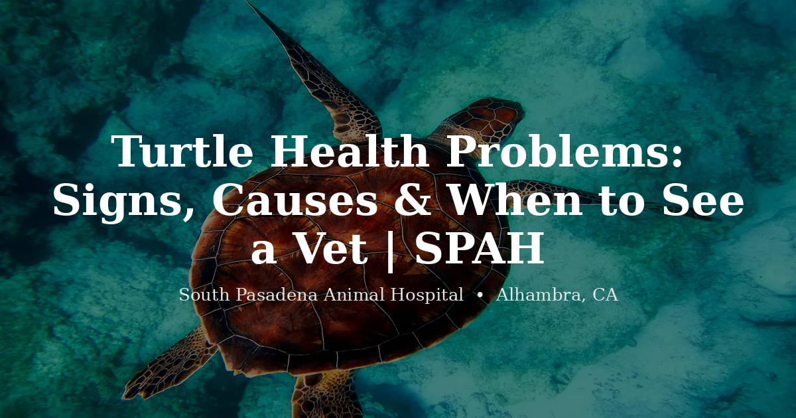

April 2, 2026 · 8 min read
Turtle Health Problems: Signs, Causes & When to See a Vet

South Pasadena Animal Hospital — At a Glance
- Address: 3116 W Main St, Alhambra, CA 91801
- Phone: (626) 441-1314
- Hours: Mon–Fri, 8–1 & 2–6 (by appointment)
- Accepting: New patients — dogs, cats, and exotic pets
Turtles and tortoises can live 30, 50, sometimes 80-plus years. People hear that and think, "Great, low-maintenance pet." They're really not. We get calls all the time from owners who've had a turtle for years and never once brought it to a vet — and now something's clearly wrong.
Here's the thing: a lot of the problems we see at South Pasadena Animal Hospital are totally preventable. Bad water quality, wrong diet, no UVB light, temperatures all over the place. The turtle doesn't complain, so the owner assumes everything's fine. Then one day the shell looks weird, or it stops eating, and suddenly we're dealing with something that's been brewing for months.
So let's go through the big ones — the stuff we actually see in clinic, not just what you'd read in a care sheet.
Shell Problems: Rot, Soft Shell, and Cracks
This is probably the number one reason turtle owners end up in our exam room. Shell rot is a bacterial or fungal infection of the shell, and it's way more common than people realize — especially in red-eared sliders.
What it looks like:
- Soft, discolored patches on the shell (white, pink, or dark spots that look "eaten away")
- A smell. If you pick up your turtle and it smells bad, that's a big red flag.
- Pitting or flaking that goes deeper than normal shedding of scutes
The cause? Dirty water, almost every time. Turtles are messy. They eat in the water, they poop in the water. If the filtration isn't strong enough — and most setups we see aren't — bacteria builds up fast. You need a filter rated for two to three times the actual tank volume. Seriously. Most people undersize their filters and it catches up with them.
We also see more shell issues in outdoor turtles here in SoCal than you'd expect. The San Gabriel Valley gets those wild temperature swings — 90 degrees one day, 55 the next. If an outdoor pond doesn't have good temperature buffering, the turtle's immune system takes a hit, and that's when infections move in.
Soft shell is different from shell rot. If the whole shell feels flexible, like you can press into it, that's usually a calcium or UVB problem (more on that below). And cracked shells — we see those from dog bites, lawn mower accidents, and falls. A cracked shell is a medical emergency. The shell is living bone. It can be repaired, but it needs to happen quickly to prevent infection.
Swollen or Closed Eyes
Seeing these signs in your turtle or tortoise in the Alhambra, Pasadena, or San Gabriel Valley area? South Pasadena Animal Hospital is accepting new exotic patients. Call (626) 441-1314 or book an appointment online. We're at 3116 W Main St, Alhambra — 10 minutes from Pasadena.
One of the most common calls we get. "My turtle's eyes are swollen shut and it won't eat." Almost always, this is a vitamin A deficiency.
It happens because the turtle's been eating nothing but pellets. Or mostly pellets with the occasional dried shrimp thrown in. Pellets aren't terrible as part of a diet, but they can't be the whole diet. Turtles need dark leafy greens — dandelion greens, collard greens, turnip greens. Tortoises especially need a varied plant-based diet, not just iceberg lettuce (which is basically crunchy water).
By the time the eyes are visibly puffy, the deficiency has been going on for a while. We can treat it with vitamin A supplementation, but it takes time to resolve, and we need to make sure there isn't a secondary infection on top of it. Don't try to treat this at home with random supplements from the pet store — too much vitamin A is toxic. It needs to be dosed correctly.
Respiratory Infections
If your turtle is doing any of these things, pay attention:
- Open-mouth breathing when it's not basking
- Bubbles coming from the nose or mouth
- Tilting or listing to one side while swimming (the infected lung is more buoyant)
- Wheezing, clicking, or any sounds when breathing
- Hanging out at the surface and not wanting to dive
Respiratory infections in turtles are almost always caused by water that's too cold, air that's too cold, or both. The basking area needs to be warm enough for the turtle to fully dry out and thermoregulate. If the water's at 65°F because someone thought turtles are "cold-water animals," that's how you end up with pneumonia.
For outdoor setups in the Alhambra and SGV area — those cool nights in winter and early spring are a real problem. If you're not bringing aquatic turtles inside when nighttime temps drop below 60°F, you're rolling the dice on a respiratory infection.
This is one we don't recommend waiting on. Reptile respiratory infections get worse fast, and turtles can go downhill in a matter of days once pneumonia sets in. Antibiotics work well when you catch it early.
Not Eating
Okay, this one's tricky because there are a lot of reasons a turtle or tortoise might stop eating, and not all of them are emergencies.
The most common mistake we see: the owner isn't checking the water temperature. Turtles are ectotherms. If the water's too cold, their metabolism slows way down and they just... stop eating. It's not a disease, it's physics. Get a thermometer. Check it. Water should be 75–80°F for most common pet turtles.
Other non-emergency causes:
- Brumation — some turtles and tortoises naturally slow down in cooler months. Even indoor ones sometimes do this.
- New environment — just moved, new tank, something changed. Give it a week.
- Picky eater — especially tortoises. They get stuck on one food and refuse everything else.
When to actually worry:
- Hasn't eaten in two-plus weeks and temps are correct
- Losing weight visibly — the legs and neck start looking thin
- Not eating AND something else is off (eyes swollen, shell looks bad, discharge from nose)
Metabolic Bone Disease
MBD shows up differently in turtles versus tortoises, but the root cause is the same: not enough calcium, not enough UVB, or both.
In turtles, you'll see a soft, flexible shell. The shell literally doesn't harden properly because there isn't enough calcium being deposited. Sometimes the edges curl up or the shell looks lumpy.
In tortoises, the classic sign is pyramiding — the scutes on the shell growing upward in a pyramid shape instead of lying flat. Mild pyramiding is pretty common and not always a crisis, but severe pyramiding means something's been wrong with the diet or lighting for a long time.
Prevention is straightforward but people skip the steps:
- UVB light. Not optional. Even for aquatic turtles. A linear tube bulb (ReptiSun 5.0 or 10.0) over the basking area, replaced every 6 months.
- Calcium supplement dusted on food or provided as a cuttlebone in the enclosure.
- Outdoor time in natural sunlight when weather allows — and in SoCal, the weather allows it a lot. Nothing replaces real sun.
Egg Binding
This catches a lot of people off guard. Female turtles and tortoises can produce eggs even without a male around. It's like chickens — they'll lay infertile eggs regardless. The problem is when they can't lay them.
Signs of egg binding:
- Restlessness — pacing, digging, trying to climb out of the enclosure
- Not eating for an extended period
- Straining — looks like they're trying to push something out but nothing's coming
- Hind leg weakness or dragging
The most common reason for egg binding? No suitable nesting site. Female turtles and tortoises need an area of moist, diggable substrate deep enough for them to bury eggs. If they don't have that, they'll hold the eggs in, and that's when things go sideways. Retained eggs can cause infections, rupture internally, or compress organs.
If you have a female — and a lot of owners genuinely don't know their turtle's sex — always provide a nesting area, even if there's no male in the picture. If she's been restless and straining for more than a day, come in. This can become life-threatening.
Parasites
Way more common than people think. We find parasites in a huge percentage of the turtles and tortoises we see, especially animals that came from pet stores, swap meets, or were wild-caught.
A lot of the time, a low parasite load doesn't cause obvious symptoms. The turtle seems fine. But when they're stressed — new home, temperature changes, another illness — the parasite numbers explode and suddenly you've got diarrhea, weight loss, or a turtle that just looks rough.
We recommend a fecal test for any new turtle or tortoise, period. It's cheap, it's easy, and it catches stuff before it becomes a bigger problem. If your turtle or tortoise has never had one, it's worth doing.
Outdoor Turtle and Tortoise Concerns in SoCal
A lot of our clients in the San Gabriel Valley keep their turtles and tortoises outdoors — and honestly, for most species that does well here. The climate's pretty ideal for sulcatas, desert tortoises, red-eared sliders, and a bunch of others. But outdoor setups come with their own set of problems that indoor owners don't have to think about.
- Predators: raccoons are the big one. They're smart, they're strong, and they can flip a tortoise and do real damage. Crows and ravens will go after smaller turtles. Even rats will chew on tortoises overnight. If your tortoise is under 8 inches, it needs a covered, secure enclosure — especially at night.
- Escapes: tortoises are surprisingly good at digging under fences and climbing corners. We get calls from owners whose sulcata disappeared from the yard. If your tortoise is outdoors, bury the fence line at least 12 inches deep.
- Heat exposure: yes, even in animals that like warmth. A tortoise stuck on concrete in direct sun with no shade when it's 105°F in Alhambra in August can overheat and die. Always provide shade and areas to retreat to.
- Yard chemicals: fertilizers, pesticides, snail bait — all toxic. If you treat your yard and you have a tortoise roaming it, you need to rethink your landscaping routine. Metaldehyde (common snail bait) is lethal to tortoises.
- Contaminated water: outdoor ponds collect runoff, fallen leaves, and debris. If the water quality drops, shell rot and bacterial infections follow.
When to Come In vs. When to Monitor
Not everything needs a same-day visit. Here's how we generally think about it:
Monitor at home for a few days:
- Turtle skipped a meal or two but otherwise seems normal
- Mild shell scute shedding that looks clean underneath
- Tortoise is less active in cooler weather (check temps first)
- New turtle hiding a lot — give it time to adjust
Schedule a visit this week:
- Not eating for more than two weeks with correct temps
- Swollen eyes or eyes that won't open
- Shell discoloration or soft spots
- Weight loss you can see
- Runny or unusual stool for more than a few days
Come in now — don't wait:
- Open-mouth breathing, bubbles from the nose
- Cracked or severely damaged shell
- Egg binding — straining, swollen, not eating
- Prolapse — tissue visible outside the vent or cloaca. Keep it moist and get here.
- Dog bite, lawn mower injury, any trauma
- Turtle or tortoise found floating and can't right itself
What a Turtle or Tortoise Vet Visit Looks Like
Most turtle and tortoise owners have never done this before, so here's what to expect when you bring yours to us:
- Physical exam: we check the shell thoroughly (top and bottom), look in the mouth, check the eyes, feel the limbs, weigh them. With aquatic turtles, we'll note body condition and whether they can swim normally.
- Fecal test: we run these on almost every chelonian we see. Parasites are that common. Bring a fresh stool sample if you can — saves time.
- Husbandry review: we're going to ask a lot of questions about your setup. Tank size, water temp, basking temp, UVB type, diet, substrate. Don't take it personally — a huge percentage of turtle and tortoise problems trace directly back to husbandry, and fixing the setup is half the treatment.
- X-rays: if we suspect egg binding, shell fractures, bladder stones, or respiratory issues, radiographs tell us a lot. Turtles are actually pretty easy to x-ray compared to some reptiles.
- Bloodwork: for more complex cases or when we're worried about organ function, calcium levels, or infection markers.
You can check our reptile exam prices for exam costs so there aren't any surprises.
Bottom line — turtles and tortoises are tough animals, but "tough" doesn't mean "indestructible." They hide illness well, and by the time you notice something, it's usually been going on for a while. A yearly checkup goes a long way, and if something looks off, trust your gut and bring them in. We see turtles and tortoises regularly at our Alhambra clinic and we're always happy to take a look.
Frequently Asked Questions: Turtle Health Problems
What are the most common turtle health problems?
Shell rot, vitamin A deficiency (swollen eyes), respiratory infections, metabolic bone disease (soft shell or pyramiding), egg binding in females, and internal parasites. The first three are the ones we see most often at our Alhambra clinic, and all three trace directly back to water quality, diet, or temperature — meaning they're largely preventable.
How do I know if my turtle is sick?
Watch for: not eating for more than two weeks (with correct temps), swollen or closed eyes, soft or discolored shell patches, open-mouth breathing or bubbles from the nose, tilting while swimming, visible weight loss, or lethargy that goes beyond normal seasonal slowdown. Open-mouth breathing, a cracked shell, and signs of egg binding are emergencies — same-day visits, not "wait and see."
What does shell rot look like on a turtle?
Soft, discolored patches — white, pink, or dark areas that look pitted or eaten away, often with a smell. It looks different from normal scute shedding because it goes deeper and the tissue underneath is unhealthy. Caused almost entirely by dirty water and undersized filtration. Use a filter rated for 2–3× your actual tank volume.
Why is my turtle not eating?
Check the water temperature first — it should be 75–80°F for most common pet turtles. If it's too cold, they simply stop eating. That's physics, not illness. If temps are correct and it's been more than two weeks, or if the turtle has other symptoms, schedule a visit. Other non-emergency causes include brumation (seasonal slowdown), adjusting to a new environment, or diet preferences.
Do turtles and tortoises need annual vet visits?
Yes — and this is the one we have to make the case for most often. Chelonians hide illness so effectively that by the time you notice something is wrong, it's been developing for weeks or months. Annual exams include a full shell check, fecal parasite screening, husbandry review, and weight tracking. Catching a problem early is almost always less expensive than treating advanced disease.
Is there a turtle vet near me in the San Gabriel Valley?
South Pasadena Animal Hospital at 3116 W Main St in Alhambra sees turtles and tortoises as part of our exotic animal practice. Learn more about our tortoise veterinary care in Alhambra. We're about 5–20 minutes from Monterey Park, San Gabriel, Rosemead, Arcadia, and Pasadena — close enough that we're a realistic exotic vet near you for most of the SGV. Call (626) 441-1314 or book online to schedule a reptile exam.